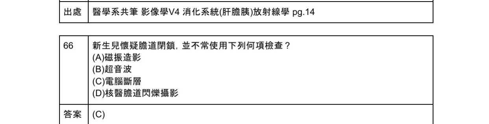

導讀：黑白片裡的診斷密碼
醫學影像就像是人體的透視鏡。對初學者來說，X 光片常常像是一團黑白相間的迷霧。然而，這些深淺不一的影像背後，隱藏著拯救生命的關鍵密碼。為什麼氣體在 X 光片上是黑色的，而骨頭是白色的？這源於不同組織吸收 X 射線的能力不同（阻射率）。
在這個單元中，我們將學習四種主要的影像學工具（Modalities），它們就像是偵探手中的四種不同放大鏡：
- KUB（X光片）： Kidneys, Ureters, and Bladder 的縮寫，也就是一般常說的腹部平片。它是最快速、最基本的檢查，專門用來看異常的「氣體分布」和「鈣化結石」。
- 鋇劑攝影（Barium studies）： 喝下或灌入對 X 光不透光的鋇劑，配合透視攝影（fluoroscopy），能完美勾勒出消化道內壁的黏膜輪廓。雖然現在常被內視鏡取代，但它對於評估腸道動力學和狹窄段依然非常有用。
- CT（電腦斷層）： 提供高解析度的 3D 橫切面影像，是診斷急性腹痛（如闌尾炎、憩室炎、內臟破裂）的黃金標準。
- MRI（磁振造影）： 無輻射，軟組織對比極佳，特別適合用來評估肝膽胰系統以及發炎性腸道疾病（如肛管瘻管）。
光學內視鏡 vs 虛擬內視鏡 (MDCT)：
光學內視鏡可以直接切片、看到真實色彩且無輻射，但無法精準測量病灶大小（MDCT可），且視野會受限（MDCT無限制）。
想像你要評估一條水管：KUB 只能看出水管大約的位置和有沒有破掉漏氣；鋇劑攝影可以把水管內壁的鏽斑看得一清二楚；CT 則能告訴你管壁有多厚、管子外面有沒有發炎或腫瘤；而 MRI 則能精準區分管壁旁不同軟組織的成分。
消化道急症影像：氣體與阻塞
急診中最怕遇到的兩種致命狀況：一是腸子破了（氣腹），二是腸子塞住了（腸阻塞）。在 X 光片上，這兩種情況都有非常經典的表現。
1. 氣腹 Pneumoperitoneum (Free Air)
正常情況下，腹腔內除了腸道內，不該有任何游離氣體（free air）。一旦腸道破裂（最常見是胃或十二指腸潰瘍穿孔），氣體就會漏進腹腔。因為氣體比周圍組織輕，所以當病人站立時，氣體會往上跑，積聚在橫膈膜下方。
- 經典 Sign： 橫膈下新月形透亮影（Crescent sign under diaphragm）。這通常在站立姿的胸部 X 光片（Upright CXR）最容易看到，因為 CXR 的射束能完美捕捉橫膈膜下緣。
- 原理： 為什麼要照胸部 X 光？因為 X 光的中心對準胸部，射束平直穿過橫膈下方，最能凸顯那層薄薄的空氣。
2. 腸阻塞 Bowel Obstruction
當腸道塞住，前方的內容物和氣體排不出去，腸管就會像吹氣球一樣擴張（dilated loops）。在直立姿的腹部 X 光上，液體在下、氣體在上，會形成明顯的交界面。
- 經典表現： 階梯狀氣液面（Air-fluid levels）。
- 小腸阻塞（SBO）： 擴張的小腸環繞在腹部中央，常常出現 String of pearls sign（珍珠串徵象）。這是因為小腸內的半月瓣（valvulae conniventes）在少量氣體襯托下，像一串珍珠。
- 大腸阻塞（LBO）- 乙狀結腸扭轉： 乙狀結腸像扭毛巾一樣扭結，形成一個巨大的充氣腸段，狀似咖啡豆，稱為 Coffee bean sign（咖啡豆徵），多見於年長或長期臥床便秘的患者。
急診懷疑消化道穿孔時，首選影像學檢查是 站立姿胸部 X 光（Upright CXR），而不是腹部 KUB！躺著照的 KUB 很難看到游離氣體，因為氣體會散布在腹腔前方，不易形成對比。
Plain film (KUB) 看不出的病變：
結腸炎、胃炎、肝腫瘤、肝膿瘍、脾破裂等軟組織病變，單靠 KUB 是一定看不出來的！
關於消化道穿孔導致的氣腹 (Pneumoperitoneum)，在影像學檢查上最典型的表現為何？
- (A) 腹部超音波可見大量腹水
- (B) 仰臥位腹部 X 光片可見階梯狀氣液面
- (C) 直立姿胸部 X 光片可見橫膈下新月形透亮區
- (D) 腹部電腦斷層可見小腸擴張呈珍珠串狀
鋇劑攝影的經典 Sign：從鳥嘴到蘋果核
雖然現在是內視鏡的天下，但鋇劑攝影在過去是診斷消化道疾病的主力。這些疾病在鋇劑勾勒下產生了極具想像力的「食物或動物」徵象，至今仍是國考與臨床的必考重點。
食道疾病
- Achalasia（食道遲緩不能）： 食道下端的括約肌（LES）無法放鬆，導致上方食道大幅擴張，下端則呈現平滑的漏斗狀狹窄。在鋇劑攝影下就像鳥的嘴巴，稱為 Bird's beak sign（鳥嘴徵）。
- Diffuse Esophageal Spasm（瀰漫性食道痙攣）： 食道出現強烈、不協調的收縮，導致鋇劑被擠壓成一截一截的，外觀如同開瓶器，稱為 Corkscrew esophagus（開瓶器食道）。
大腸疾病
當結腸長了惡性腫瘤（Colorectal cancer），腫瘤會沿著腸管環狀生長（circumferential growth），導致腸腔越來越窄。在鋇劑灌腸攝影（Barium enema）中，鋇劑流經狹窄處時，兩端寬、中間窄，外觀就像被啃剩的蘋果核，這就是非常經典的 Apple core lesion（蘋果核病灶）。一旦看到這個 sign，幾乎可以高度懷疑是大腸癌。
- Bird's beak = Achalasia (食道遲緩不能)
- Corkscrew = Diffuse esophageal spasm (食道痙攣)
- Apple core = Colorectal cancer (大腸直腸癌)
- Coffee bean = Sigmoid volvulus (乙狀結腸扭轉)
一名 65 歲男性因體重減輕及排便習慣改變就醫，接受下消化道鋇劑灌腸攝影，發現結腸處呈現「蘋果核徵象 (Apple core sign)」。這最可能是何種疾病的典型表現？
- (A) 潰瘍性結腸炎 (Ulcerative colitis)
- (B) 克隆氏症 (Crohn's disease)
- (C) 大腸直腸癌 (Colorectal cancer)
- (D) 乙狀結腸扭轉 (Sigmoid volvulus)
發炎性腸道疾病：UC 與 Crohn's 的影像對決
發炎性腸道疾病（IBD）主要分為兩大類：潰瘍性結腸炎（Ulcerative Colitis, UC）和克隆氏症（Crohn's Disease, CD）。這兩者在病理和影像學上有著涇渭分明的差異。
1. 潰瘍性結腸炎 (Ulcerative Colitis)
UC 的特色是「連續性、表淺性」的發炎，且總是從直腸開始，一路往上游（近端結腸）蔓延。
- 因為長期反覆發炎，結腸的結腸袋（haustra）會完全消失，整個腸管變得僵硬、平滑，缺乏正常的皺褶。
- 在鋇劑灌腸攝影上，大腸看起來就像一根沒有彈性的鉛管，稱為 Lead pipe colon（鉛管狀結腸）。
2. 克隆氏症 (Crohn's Disease)
Crohn's disease 則是「跳躍性、全層性」的發炎。它可以影響從口腔到肛門的任何部位，但最常侵犯末端迴腸（Terminal ileum）。
- 因為發炎是全層的，會導致嚴重的纖維化和管腔狹窄。
- 當末端迴腸嚴重狹窄時，鋇劑流過去就像一根細細的線，稱為 String sign（線狀徵象）。
- 此外，跳躍性的病灶和深層潰瘍，會在腸壁形成交錯的卵石狀外觀，稱為 Cobblestone appearance（鵝卵石徵象）。
| 特徵 | 潰瘍性結腸炎 (UC) | 克隆氏症 (Crohn's) |
|---|---|---|
| 病變範圍 | 從直腸開始，連續性向上 | 口腔到肛門，跳躍性 (skip lesions) |
| 深度 | 黏膜層、黏膜下層 | 全層 (transmural) |
| 好發部位 | 結腸、直腸 | 末端迴腸 (Terminal ileum) |
| 經典影像 Sign | Lead pipe (鉛管) | String sign (線狀)、Cobblestone (鵝卵石) |
克隆氏症 (Crohn's, CD) vs 潰瘍性結腸炎 (UC) 鑑別：
• CD：節段性/跳躍式 (Segmental/Skip)，直腸約半數侵犯，全層發炎 (Transmural/Deep ulcer)，迴腸末端幾乎一定侵犯，呈現鵝卵石狀 (Cobblestone)，常併發瘻管、膿瘍或狹窄，不對稱結腸袋消失。
• UC：連續性 (Continuous)，直腸 100% 侵犯，僅限黏膜層 (Mucosal/Shallow)，迴腸末端正常 (少數backwash)，常有假性息肉 (Pseudopolyps)，呈現對稱結腸袋消失或鉛管狀 (Lead pipe)，併發毒性巨結腸 (Toxic megacolon) 或癌變機率較高。
關於發炎性腸道疾病在影像學上的表現，下列何者配對正確？
- (A) 潰瘍性結腸炎 —— String sign
- (B) 克隆氏症 —— Lead pipe colon
- (C) 潰瘍性結腸炎 —— Cobblestone appearance
- (D) 克隆氏症 —— 跳躍性病灶 (Skip lesions) 與 String sign
克隆氏症的特徵是跳躍性、全層性發炎，常見 Cobblestone 與末端迴腸的 String sign。潰瘍性結腸炎則是連續性表淺發炎，導致結腸袋消失，形成 Lead pipe colon (鉛管狀結腸)。
一分鐘考前秒殺心法
考試遇到影像學題目，抓準這些關鍵字就能快速答題：
- 看到 Crescent sign (新月徵) / Free air → 想到 G-I perforation (穿孔) → 檢查選 Upright CXR。
- 看到 Air-fluid level / String of pearls → 想到 Small Bowel Obstruction (SBO)。
- 看到 Apple core (蘋果核) → 想到 Colorectal cancer (大腸癌)。
- 看到 Bird's beak (鳥嘴) → 想到 Achalasia。
- 看到 Lead pipe (鉛管) → 想到 Ulcerative Colitis (UC)。
- 看到 String sign / Cobblestone → 想到 Crohn's Disease。
考古題全收錄
以下整理自 BM111 至 BM113 關於「胃腸影像學」的所有題目。部分原檔未完整保留的題目已根據核心考點重建。
關於消化道穿孔導致的氣腹 (Pneumoperitoneum)，在影像學檢查上最典型的表現為何？
- (A) 腹部超音波可見大量腹水
- (B) 仰臥位腹部 X 光片可見階梯狀氣液面
- (C) 直立姿胸部 X 光片可見橫膈下新月形透亮區
- (D) 腹部電腦斷層可見小腸擴張呈珍珠串狀
詳解：消化道穿孔產生的游離氣體會因重力上升，在直立姿胸部 X 光 (Upright CXR) 橫膈下方形成新月形透亮區。這是最快速且典型的診斷方法。
在食道鋇劑攝影中，若發現食道嚴重擴張，且下端呈現平滑的漏斗狀狹窄，形似「鳥嘴 (Bird's beak)」，最可能的診斷是：
- (A) 胃食道逆流 (GERD)
- (B) 瀰漫性食道痙攣 (Diffuse Esophageal Spasm)
- (C) 食道遲緩不能 (Achalasia)
- (D) 食道癌 (Esophageal cancer)
詳解：Achalasia 的特徵是下食道括約肌 (LES) 無法放鬆，導致上方食道擴張，末端狹窄呈 Bird's beak sign。瀰漫性食道痙攣則是呈 Corkscrew (開瓶器) 外觀。
一名 65 歲男性因體重減輕及排便習慣改變就醫，接受下消化道鋇劑灌腸攝影，發現結腸處呈現「蘋果核徵象 (Apple core sign)」。這最可能是何種疾病的典型表現？
- (A) 潰瘍性結腸炎 (Ulcerative colitis)
- (B) 克隆氏症 (Crohn's disease)
- (C) 大腸直腸癌 (Colorectal cancer)
- (D) 乙狀結腸扭轉 (Sigmoid volvulus)
詳解：Apple core sign 是腫瘤環狀生長導致腸管狹窄的經典表現，高度提示惡性的大腸直腸癌。
苑林先生，有糖尿病，高血脂病史，抽血檢查發現肝指數異常上升，經安排腹部超音波檢查，結果顯示（如下圖）。依病患病史，與超音波檢查。請問下列何者為最有可能是之診斷。

- (A) 脂肪肝合併偽腫瘤 (pseudotumor)
- (B) 肝癌 (hepatoma)
- (C) 血管瘤 (hemangioma)
- (D) 偽脾腫大 (Beaver tail of liver)
詳解：患者有糖尿病與高血脂，是脂肪肝的高危險群。在超音波上，局部未受脂肪浸潤的區域（focal fat sparing）或局部脂肪堆積，常被誤認為腫瘤，稱為偽腫瘤 (pseudotumor)。
急診收治一名嚴重腹痛及嘔吐的病患，腹部平片 (KUB) 發現多處小腸擴張，並伴隨半月瓣清晰可見，狀似「珍珠串 (String of pearls)」。此影像最可能代表：
- (A) 胃潰瘍穿孔
- (B) 小腸阻塞 (Small bowel obstruction)
- (C) 結腸扭轉
- (D) 缺血性腸炎
詳解：String of pearls sign 是由於小腸阻塞時，小量氣體被困在擴張小腸的半月瓣 (valvulae conniventes) 之間所形成的經典徵象。
關於發炎性腸道疾病在影像學上的表現，下列何者配對正確？
- (A) 潰瘍性結腸炎 —— String sign
- (B) 克隆氏症 —— Lead pipe colon
- (C) 潰瘍性結腸炎 —— Cobblestone appearance
- (D) 克隆氏症 —— 跳躍性病灶 (Skip lesions) 與 String sign
詳解：Crohn's Disease 是跳躍性、全層發炎，會導致嚴重的狹窄 (String sign) 和鵝卵石樣外觀。UC 則是連續性發炎，導致腸道僵硬失去結腸袋，呈現鉛管狀 (Lead pipe colon)。
對於評估發炎性腸道疾病 (IBD) 患者是否合併複雜的肛門直腸周圍瘻管 (perianal fistulas)，下列何種影像學檢查為首選工具？
- (A) 骨盆腔 X 光攝影
- (B) 鋇劑灌腸攝影 (Barium enema)
- (C) 腹部超音波 (Abdominal sonography)
- (D) 骨盆腔磁振造影 (Pelvic MRI)
詳解：MRI 對軟組織的對比度極佳，是評估克隆氏症患者是否併發複雜性肛門周圍瘻管 (perianal fistulas) 或膿瘍的黃金標準。